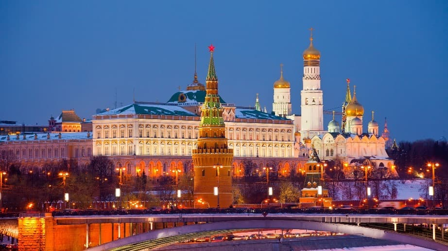
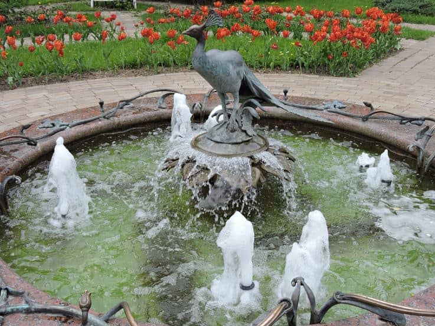
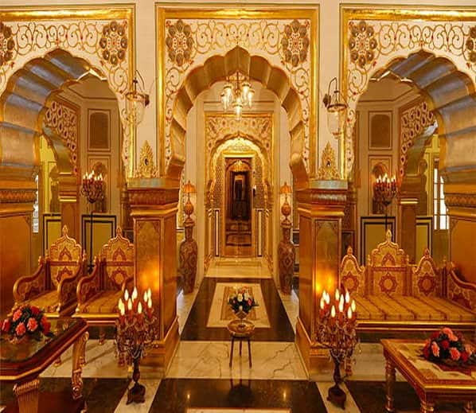

الكرملين

حرم الكرملين Kremlin يُعد واحدًا من أشهر الاماكن السياحية في روسيا ، وهو عبارة عن مُجمع قصور تاريخية فاخرة كانت مقرًا لحاكم روسيًا قديمًا وتم تحويلها في عصرنا الحالي إلى عدد من المتاحف، كلمة كرملين باللغة الروسية تعني القلعة أو القصر المنيع.
تقع هذه المتاحف في قلب مدينة موسكو بمواجهة الميدان الاحمر في موسكو وعدد من الأسواق التُجارية ويبلغ ارتفاع أعلى قمة بها أكثر من 25 مترًا.
وبالعودة قليلا إلى الوراء نجد أن عُمر الكرملين يبلغ أكثر من 500 عام من الزمان، حيث بُنيت في أواخر القرن الخامس عشر بأمر من القيصر الروسي إيفان الثالث والذي حكم الإمبراطورية السوفيتية
افضل الأنشطة في الكرملين موسكو
القيام بجولة سياحية في عدد من القصور القديمة الأثرية في حرم الكرملين بصحبة أحد المُرشدين السياحيين داخل القصور والذي من شأنه يجعل جولتك أكثر مُتعة ويزودك بمُلخص لتاريخ المكان والقصور والتاريخ الروسي والعادات والتقاليد القديمة وأهم الملامح الثقافية

القيام بجولة سياحية في عدد من القصور القديمة الأثرية في حرم الكرملين بصحبة أحد المُرشدين السياحيين داخل القصور والذي من شأنه يجعل جولتك أكثر مُتعة ويزودك بمُلخص لتاريخ المكان والقصور والتاريخ الروسي والعادات والتقاليد القديمة وأهم الملامح الثقافية

مُحبي التاريخ والمهتمين بالآثار سوف يجدون في متحف الكرملين ضالتهم، حيث يمتلئ المكان عن آخره بمجموعة هائلة من القطع النادرة واللوحات الفنية لأشهر الرسامين وكذا مخطوطات تاريخية قديمة خاصة بالامبراطورية الروسية التي تركها الملوك والرؤساء الذين تعاقبوا على حُكم البلاد مُنذ أكثر من 500 عامًا مضت

عند زيارتك لمحيط الكرملن يجب أن لا تنس التقاط الصور التذكارية الفوتوغرافية، والتي من شأنها أن تُمكنك من الاحتفاظ بذكرى رائعة من زيارتك الشيقة إلى هذا المكان التاريخي العريق